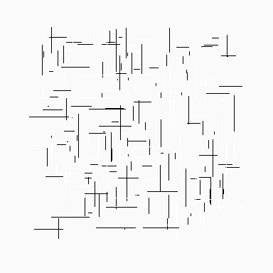
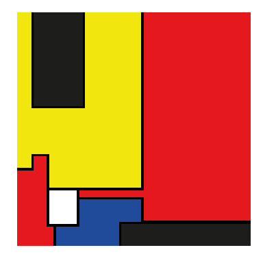
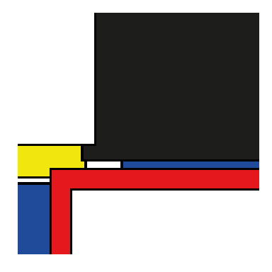
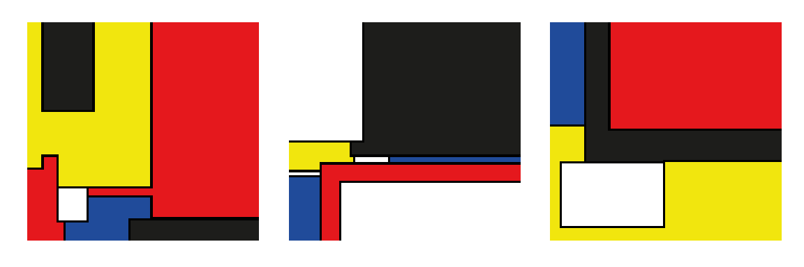

require(aRtsy)Loading required package: aRtsyWarning: package 'aRtsy' was built under R version 4.2.2require(patchwork)Loading required package: patchworkSummary
wrap_plotsInstead of using boring plots we will use our private art collections and items.
One great package to create your art in R is aRtsy Let’s fire it up
require(aRtsy)Loading required package: aRtsyWarning: package 'aRtsy' was built under R version 4.2.2require(patchwork)Loading required package: patchwork#before starting for having a look at the palette
?colorPalettestarting httpd help server ... doneCreate a Mondrian and save it
set.seed(23)
Composition_10 <- canvas_squares(colors = colorPalette("boogy2"))
saveCanvas(Composition_10 , filename = "Mondrian.png")
Composition_10 and another one
set.seed(1)
aspect_ratio <- 1
height <- 2
Composition_1 = canvas_segments(colors = colorPalette("blackwhite"))
Composition_1 
or if you want to create a lots of them, create names automatically and then take a look at just one of your artistic composition in your collection use the following code:
n_items <- 3
collection <- list()
name_of_Composition <- list()
for (i in 1:n_items) {
seed <- (sample(1:100000,1)) + 1
name_of_Composition[[i]] <- paste0("Composition_", i)
collection[[i]] <- canvas_squares(colors = colorPalette("boogy2"))
}
names(collection) <- name_of_Composition
collection$Composition_1
$Composition_2
$Composition_3
#as you can notice the setting for figure output in this chunk was changed in order to showplots with a rato of 3:1
wrap_plots(collection)
(Pedersen 2022) [Wickham (2016)](Derks 2022)